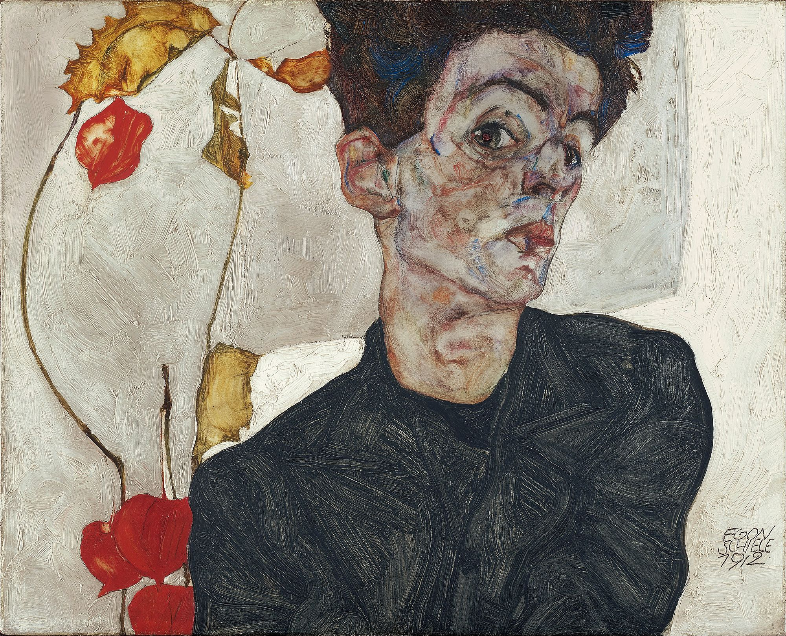
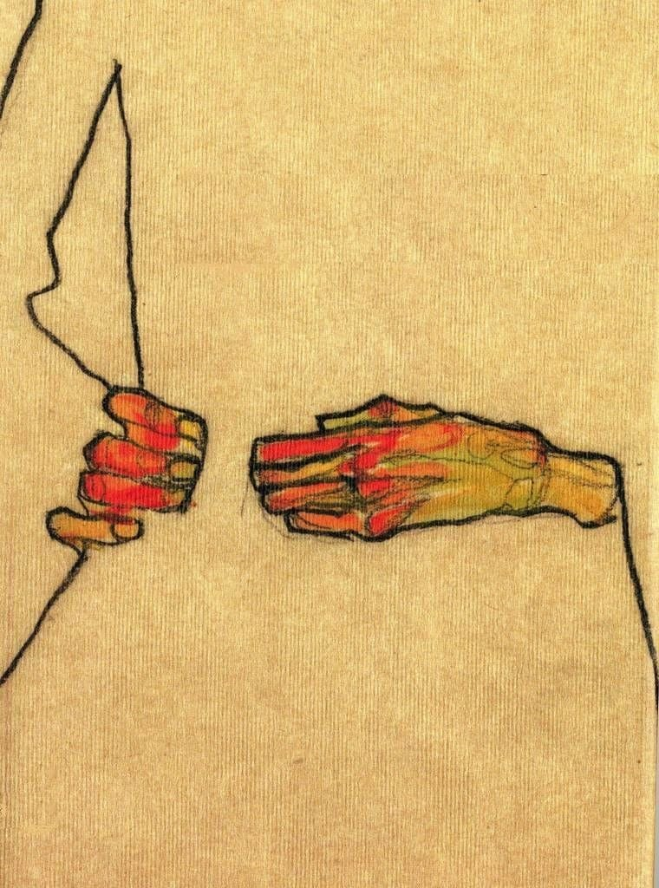
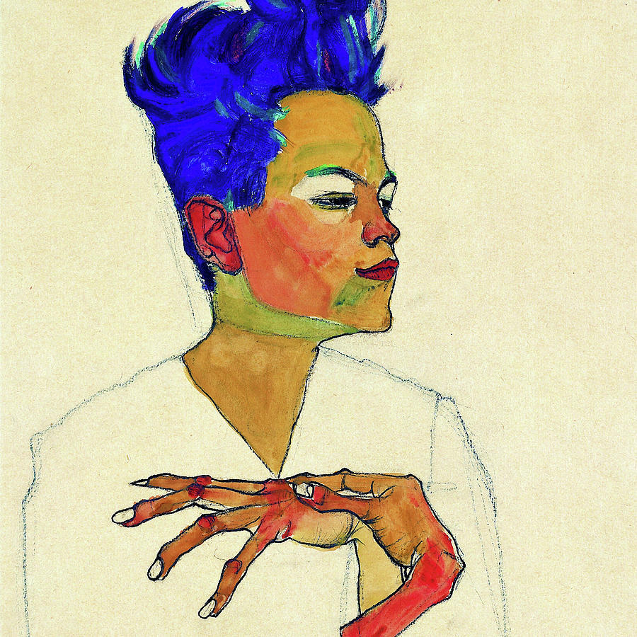
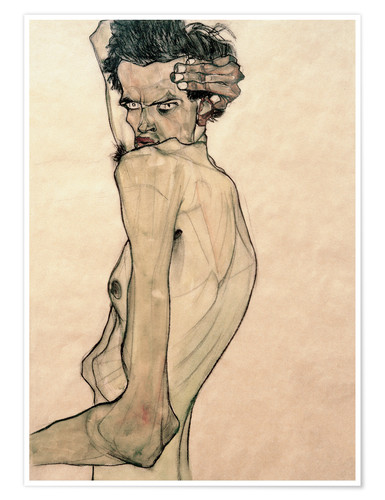
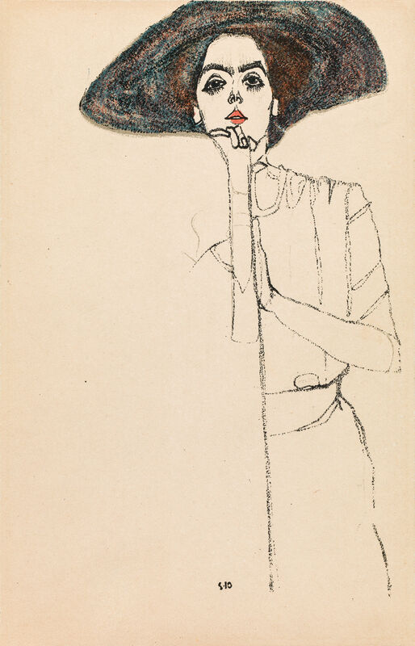
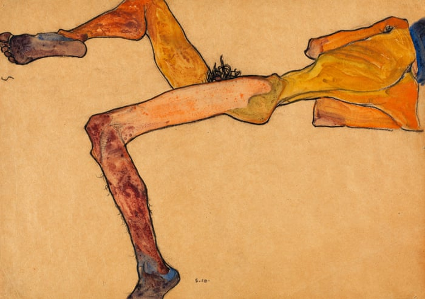
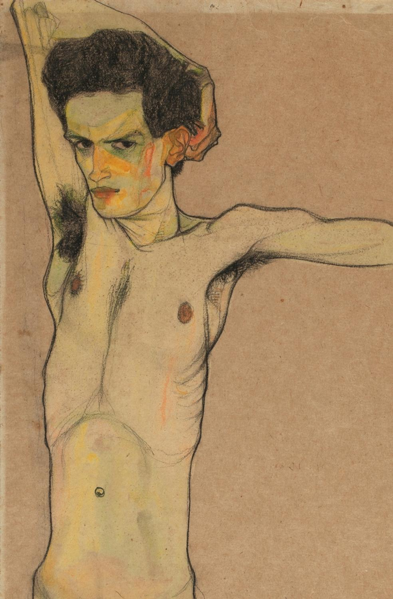

Egon Schiele (1890-1918) was an Austrian Expressionist painter who was the protégé of Gustav Klimt. His work is best known for its emotional stylistic elements and romantic or sexual nature. The majority of Schiele's work is housed at the Leopold Museum of Vienna.
Schiele completed many self-portraits over the course of his life.
A distinctive stylistic element of Schiele's is how he depicts hands.
His work is also known to have lively color palettes.
His work often showed nudes in various expressive positions.
Some of his sketch work is famed for its minimalist but expressive nature.
Schiele's nudes often had exaggerated anatomy.
Schiele often added pops of color in calculated areas to add life to his work.
